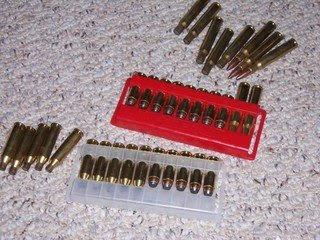

This is Elmer Fudd, the Warner Brothers cartoon character.

This is a modern-day hunter.
Before we get into our subject matter, troops, I have a mea culpa. I have referred to hunters who exhibit no interest in defending their Second Amendment rights and who are willing to throw MY right to own military pattern rifles under the bus as "Elmer Fudds." Many of us Three Percenters do. It is understandable to resent folks who you believe are totally without a clue when the threat to you seems so real, so imminent.
However, adopting this attitude across-the-board, that is, by looking at all politically non-involved hunters as "Elmer Fudds" is not only wrong, it is counter-productive. My thinking has changed thanks to several conversations I have had with folks over the last few months which finally crystalized for me this week. It began with a request from a newly politicized hunter.
"I read your article on packaging, but I have a scoped bolt action rifle (a Winchester Model 70). What can I do to pack my ammo any better than in the boxes it came in so I can transport it and use it quickly?"
There are, of course, many open-looped ammo belts of the type first invented by the US Cavalry officer Anson Mills. Here is an example:

However, my hunter friend's question was one of packaging and storage, as much as tactical utility. What I came up with is, I think, a good compromise. It uses as its principal component the plastic insert that comes in Federal and other rifle ammunition boxes. Here is a sample:


Note that these ten round inserts come with belt loops, enabling them to be worn on a standard pants belt. The loops are just a bit less than two inches internal width. Of course the colors of these inserts are hardly tactical, usually being red or white as in the illustration above.
My solution was to spray prime them with Rust-Oleum Plastic Primer and then spray paint them OD. I have some 1.75" OD thin webbing on a roll that I picked up cheap somewhere in the Clintonista era and so I cut an appropriate length of material, threaded it through four 10 round carriers (scavenged from the trash barrels at the range), and secured the two ends by threading them through some 2" plastic slides that I scavenged off packs, duffle bags and purses bought at the thrift store. (For an average of $.79 each, I get a fair number of slides, d-rings and fastex buckles off each one. Can't buy them that cheap in WalMart or a sewing shop.)
Four bandoleers will fit in an M19A1 "thirty cal" ammo can, giving a hundred and sixty rounds per can. Voila! Tactical storage that can be used in the field. The plastic carriers actually grip the rounds more tightly than the average modern Mills-type belt, no matter what it is made of.
When it is used up, it can be discarded at little expense, or reloaded from bulk boxes. This is my contribution to making deer hunters tactical.
Over the years, many volunteers have come up to me saying, apologetically, that they don't have a military pattern rifle (AR, AK, etc.) they JUST have their bolt action deer rifle. Previously, I usually said something like "That's OK, it'll do until you can get something better."
Now, I'm not so sure that a military pattern rifle IS better all the time. For one thing, a man who has used a deer rifle all his life knows that rifle inside and out. He KNOWS what it can do, and what he can hit. He knows other things too.
This subject came up not long ago when I was speaking with a young man who wondered how we would train all the "Fudds" in military tactics and battle rifle marksmanship when they did rally to to us.
That many hunters will rally I have do doubt, even given their political inactivity now. Events have always been our greatest recruiter. In some peoples' minds, it just isn't that bad yet. They don't keep track of the bills in the hopper, or the internet websites devoted to firearms rights. They work, they read the paper, they watch TV, hence they have no definite word of how ominous the threat really is.
I told my young friend that maybe they wouldn't need that much training. Look at what a real hunter knows:
He knows how to live in the woods, how to move quietly, to stalk game and how to dress it.
Because he uses a bolt-action rifle he is free from the burst-happy sickness of spray and pray. You cannot bump fire a bolt action rifle. The hunter picks his target, and his aim point, carefully, and if he is good it is one shot, one kill.
His marksmanship is almost always better than the paper-punchers down at the range. This was brought home to me by a hunter who just bore-sighted his .300 WinMag rifle and came to the range on Friday to fine tune it. He did it, with TWO ROUNDS.
And also unlike those non-veteran paper-punchers, the hunter knows what it is like to kill. Oh, there's a jump to be sure from taking four-legged game to killing two-legged predators, but not as much as for someone who has killed nothing bigger than a cockroach with his shoe.
In a military situation, the hunter armed with a bolt-action rifle need not get so close to engage his target and he is unlikely to stay too long (an important point in 4th Generation warfare).
To take that bolt-action rifle out of the hands of someone who has been using it all his life and hand him a semi-automatic military pattern rifle is like asking a Samurai swordsman to chop brush. It can be done, but it is a waste of resources.
Better would be to figure out how to use hunters as designated marksmen in your larger organization. Food for thought toward the day when many hunters rally to us. For they will, whether they fit the description of "Elmer Fudd" now or not.
17 comments:
My pop also only used 2 bullets EVERY YEAR to fine tune his rifle.
He used the same one my entire life up until his death.
He did the same with all his guns,and knew them all intimatley.
He also used to shoot chipmunks with his K22 S&W while they ran across the ground.
I've been taught to do the same. Large expenditure of ammo DOES NOT always corolate with weapons accuracy.
CIII
CIII
As a threeper and hunter, I suggest getting a .450 Ackley or .458 Lott with no porting or braking. You will learn to boresight and dial it in in two to three rounds in very short order, both due to ammo cost (even if reloaded) and the significant recoil.
I'm a threeper by way of being a hunter and general gun crank and smith first, politics came second. At the moment, politics are first because of circumstances beyond my control.
As to two legs vs four legs, if I had to shoot somebody attacking myself or my friends I don't think I'd feel any remorse unless I made a wounding shot, I don't even like to do that on game animals. Once asked what it felt like to kill a zebra I said "about 12lbs of recoil, same as paper at the range" and the questioner frowned at me. Doesn't make me a sociopath, just means I don't see it as being much of a personal issue for me if such acts ever are forced on us by the state.
I know a lot of people both military and LEO that have killed a lot of people and have known these sorts all my life, not too many of them have nightmares and most all of them still like to go deer hunting. The ones that have nightmares are one that thinks he got some of his men killed because he made a bad platoon leader decision and one LEO I know who's partner was killed in front of him. There was no way for either of them to have done anything different that would have changed the outcome but they still blame themselves a bit. If they'd killed the enemies, I don't think they'd be losing sleep over it.
I've found an interesting paper on 4GW by William Lind, et al. It can be found here;
http://www.d-n-i.net/lind/fmfm_1a_r3.pdf
deliberate, aimed fire is certainly the order of the day, in a technical analysis of the situation.
barring appleseeders and the like, the hunter is the only widely available domestic example of this practice today.
hypothesis: there is a serious problem here with the attitude of folks adopting a 24/7 condition white attitude, in general -- but especially those who keep and bear arms, and within that group, especially owners of the class of firearm about to be effectively banned nationwide.
hunters probably just dominate this demographic, hence, "fudd."
"The Color Code refers not to a condition of peril, but rather to a condition of readiness to take life."
cooper also stressed .308 for the scout, and lamented the .223 in general. i think maybe those wise ol' tacticians were right about heavy bullets.
full automatic eliminates follow-through; the subject can no longer call the shot. i can't imagine there's anything worse than shooting a person, except maybe shooting at them a whole lot, and then having to take cover and spend time with your hazy short-term memory to determine whether or not you just did what you think you just did.
an article on practical long range shooting posted on WRSA a little while ago suggested that the newcomer to this art start out with the savage 10FP chambered in .308 and a decent, but used, leupold scope.
now, what could be more practical than not wasting any ammo -- no matter what you're shooting at?
the 223 cartridge is the end of a path of compromise: a sacrifice in desireable attributes of a cartridge for the specific purpose of attaining full automatic utility. now i'm no tactician, but this might be good, if you were already intending on running directly into a kill zone -- maybe to clear out a trench? better, i think, to be 500 yards away, and to be the reason the trench and the kill zone are where they are: the guy keeping everyone's head down, wondering whether they should have been a farmer or a carpenter instead.
There was a film regarding the Boer Wars many years ago that was broadcast on SABC (South African Broadcasting Corporation) back in the pre-Mandela years.
An english speaker lady reporter was interviewing, through a translator, one of the last remaining Boer veterans and asked about the almost mythical accuracy of the Boers with Mausers vs the British and Canadians with Martini-Henry rifles.
A bit is lost in translation, but the Boer veteran said "Are you questioning the ability of a well kept Mauser to kill a person at 1000?"
She said it seemed unlikely.
He grumbled something to the translator and went in his house.
She asked the translator what he said. The translator said "He said to tell the lady that near hilltop is (memory fails me on exact numbers here as the film viewing was long ago) 800 or 1000 away. He is going to get his Mauser from the house and wondered if you might be kind enough to stand on that hilltop to see if it's possible for a Mauser to be shot at that range with accuracy."
When he came out of the house with his Mauser she hadn't moved one inch towards the hill and respectfully declined his offer.
This is all good and well, but the problem with many hunters and well, those in our own community is that everyone has this, "Well I'll be a sniper" mentality. One of my best friends is this way.
Problem is that you don't always get to pick your battles. Sometimes the fight comes to you and that bolt action Savage doesn't always get the job done when the bad guys are coming up the stairs for you.
I also see no reason why a person cannot hunt iron sights with his M1A.
Good point, John Paulding. I think what this post, and Mr. V's recent posts have been about, is that the folks we consider "fudds", i.e. hunters who don't have anything other than a scoped bolt-action they've been using for years, can a) teach some of us about fieldcraft, and b) can easily become snipers. However, those of us who aren't those men and women, those of us who have made a commitment to being III, should not follow that "I'll be a sniper" mentality you've described, for exactly those reasons which you also described. A scoped hunting bolt gun will do in a pinch, but it should NOT be your go-to gun, folks. Period.
That's where the .308 battle rifles shine. An 18" (or even 16") bbl FAL or M1A can do close quarters and urban battles well-enough (though they're obviously not the best choice), they can reach out to 500+ yards, and, whats more, they have the high magazine capacity and rate of fire that bolt guns cannot achieve. Is a DSA FAL or M14 clone the best CQB weapon? Of course not, but it'll work. Is it the best choice for long-range shooting that a Designated Marksman would do? No, but it'll do if you will do. They do everything satisfactorily, if not well, and they don't the same major drawbacks that a SBR in an intermediate caliber or a scoped hunting bolt-gun has.
If you're one of those "I'll just be a sniper" folks, you've already made the decision to participate, so you might as well come to the game with the best equipment you can afford. Although it may be too late right now, if you can, trade that scoped hunting rifle in (if it's your only rifle), and get an honest-to-god semi-auto battle rifle in .308. But, again, only if you can afford the rifle, plus at least a dozen mags, plus at least several thousand rounds of quality FMJ (if you can find it).
Hm, maybe it would be best to just keep that rifle and perhaps get loner battle rifle from a friend, or something.
I think it was Col.Cooper who said something like "Beware the man who has only one firearm, he likely knows how to use it."
Just remember this, we all have a role to play (sometimes multiple roles). If you are capable of many things, great! Equip yourself so and then spread the knowledge and skills to others.
If you only have one skilled area, find a way to apply it and start learning more.
If someone shows up, find out what they can do and get them doing it.
If there is time for learnin', learn. If there is no longer time for that, then do what you know how to do and get to it.
It's 'bout that simple.
Greg said:
"I've found an interesting paper on 4GW by William Lind, et al. It can be found here;
http://www.d-n-i.net/lind/fmfm_1a_r3.pdf
Greg, thanks for the heads up. That paper has some very interesting insights, such as the one i have pasted below. I can see the same dynamic occurring in spades here at home in the future. Imagine these same scenarios, but rather than the reactions of "traditional" Iraqis and Afghans, imagine the similar reactions of "traditional" Americans - including the "Elmer Fudd" crowd - to heavy handed actions such as house to house searches for contraband weapons, and harsh "emergency" military detention, directed by an East Coast elite who sneer down their noses at us.
Lind, et al says:
"The U.S. Army conducted many raids on civilian homes in areas it occupied. In these
raids, the troops physically dominated the civilians. Mentally, they terrified them. But at
the moral level, breaking into private homes in the middle of the night, terrifying women
and children and sometimes treating detainees in ways that publicly humiliated them (like
stepping on their heads) worked powerfully against the Americans. An enraged
population responded by providing the Iraqi resistance with more support at every level
of war, physical, mental and moral.
• At Baghdad's Abu Ghraib prison, MPs and interrogators dominated prisoners physically
and mentally -- as too many photographs attest. But when that domination was publicly
exposed, the United States suffered an enormous defeat at the moral level. Some
American commanders recognized the power of the moral level when they referred to the
soldiers responsible for the abuse as, "the jerks who lost us the war."
• In Iraq and elsewhere, American troops (other than Special Forces) quickly establish base
camps that mirror American conditions: air conditioning, good medical care, plenty of
food and pure water, etc. The local people are not allowed into the bases except in service
roles. Physically, the American superiority over the lives the locals lead is overwhelming.
Mentally, it projects the power and success of American society. But morally, the
constant message of "we're better than you" works against the Americans. Traditional
cultures tend to put high values on pride and honor, and when foreigners seem to sneer at
local ways, the locals may respond by defending their honor in a traditional manner -- by
fighting. In response to the American presence, Fourth Generation war spreads rather
than contracts."
END
The same dynamic could play out here, especially if the Obamabots make no distinction between us and the "Fudds" such as by labeling all scoped bolt actions to be "sniper rifles."
Beware the man who owns more than fifty firearms because you're gonna have one hell of a time confiscating them all and he might shoot a lot of them a lot too and know how to use them better than the guy that has one rifle and just uses it to fill his deer tags a couple times a year.--Me
Two ways to look at it.
PLUS, you gotta eat and most battle rifles aren't always good eating rifles. I shot a squirrel in the head with a .45-70 to save the meat once but I'd rather have had a .22 caliber of some sort.
Cheers,
In response to concerns that so many seem to think they will "snipers", I would point out that shooting is not the sniper's greatest skill or asset. Invisibility is.
Damn few of us are going to be able to pull that off. Especially us older guys who pop when they walk, can't get their backs to limber up enough keep from skylining themselves while moving to a hide. Can't remain absolutely still due to pain requiring constant physical adjustment, thereby ruining their chances to remain undiscovered even if they managed to get in the hide undetected.
Aha! All is not lost. Guerilla warfare could well be the protocol that negates our perceived deficiencies. We can't run as well as we did. But we can still ambush. Done right, running isn't immediately necessary. Done wrong, you won't be any deader than you would be after they kick in your door to take your rights. It may not be a win/win, but at worst it is a win/can't really lose situation.
The trick to guerilla warfare is the same skill that is the sniper's most important skill. Knowing how to hide. The difference being the guerilla must hide in plain sight in all but the most extraordinary circumstances. It is true that hiding could be accomplished in other and perhaps safer and more remote ways, but then the guerilla isn't available when and where needed.
I hear all the time people say "I'll move to mountains and hide out." Stupid! Where would an ear of corn be better hidden? In a watermelon patch or a cornfield?
With the technology available today hiding in remote unpopulated areas is almost impossible if the enemy is willing to spend the money to bear it to bear. It would take all of 6 hours to pinpoint a squad of resisters in the Grand Tetons. Years to locate them in NYC, or Chicago, or New Orleans, etc. depending of course on the chameleon abilities the members of the squad.
Just a thought. Discussion is probably needed.
My question to The types willing to give up their other american brothers rights to choose what Kind of firearms they would like to retain?
Would you be so passive if Government made you go to a Job THEY made by law for you to take on?
Selected for you?
How about who you could see? Or Marry?
Wether you were allowed to have children?
If you were ALLOWED to own a home?
What size it would be?
If they made law that stipulated you had to take a test to see if some Group thought you were capable to own Land, and you had to take their test to become qualified?
Then Why think it's okay for there to be laws telling american gun owners what kind of guns they can own?
You are the one that would make the above come true also.
Why? Because you think compromise is the answer. But compromise has never changed anything when it comes to Freedom & Liberty.
Unless you really donot care about those things?
Everyone commenting on this post makes a valid point, but we must remember this fact:
This coming conflagration will most definitely be a "dance with whut ya brung" event, at least in its early stages.
So, accepting that fact, percentages of men owning, being well-versed in the use of military look alike rifles/carbines are going to be very much lower than the guy with the Remington 742 or Winchester Model 70 or Savage Model 10, and these guys will show up with their favorite (or only) hunting rifle and most likely less than 60 rounds. The the objective then will be to resupply them with either ammo (not likely in 'normal' hunting calibers) or a new rifle/carbine provided by their marksmanship endeavors.
In preparatory training, the essential element will be for each man to be able to shoot his rifle well, meaning possessing the ability to take down his man at ranges outside the aggressor (somewhere between 300 and 500 meters).
Even that will take training for many who are equipped to take those kinds of shots with bolt guns, but do not have their rifles "dialed in" nor understand windage and the finer points of shooting. They will, but the practice most rifle ranges require is that all shooters must be seated at a bench, load one round at at time, and nobody can do quick follow up shots. No prone position firing is usually allowed, no off hand and absolutely no "barricade" practice. The result: Marksmanship suffers.
Just my .02
I can't shoot my big boomers from the bench or prone. Good thing I have a place or ten that let me shoot them. They all beat the ever living hell out of you UNLESS you shoot them offhand.
No sense in bench practice because there's no benches in the forests and plains unless you're a p-dog shooter that takes a bench with him to the fields. Always seemed like too much work to me. Get some decent shooting sticks.
Solution to range limitations seems to be to find better ranges and private land rather than let your skills languish. Tell them "I'm not coughing up my $X a year membership fee unless you let those of us you trust do things outside of bounds for random people that walk off the street just like you do for LEOs". I've had good success with that approach to range owners. They like that big annual membership fee more than they like 10/hr occasional plinkers and they get to know you and trust you.
Take up IDPA and IPSC and keep in mind to shoot like you were in a real fight, not to win the match. Don't learn the competition winning tactics that get you killed in real gunfights. IPSC and IDPA folks let you do all sorts of stuff on ranges that otherwise wouldn't allow such behavior after the IDPA and IPSC officers have you properly checked out as to safety.
At one of my locals, I've found if you are trusted, they have no problem with anything NFA Title II as long as you don't use AP, Incendiary, or Explosive projectiles...ONCE THEY KNOW YOU WON'T DESTROY THEIR RANGE.
My two pence.
Mike, I always thought the problem was with those hunters who would throw everyone else under the bus believing their bolt-action deer rifles would be left alone, not all non-politically involved hunters in general; but I see what you're getting at. A rifle like the one you mentioned has just as much battlefield utility as an M1A/HK91/FAL/whatever your choice of semi-auto; it's just used for a different application. If what I've read is right, the Army's M24 Sniper Weapon System is little more than a souped-up Remington 700.
my three man "armed neighborhood watch" embraces hunting rifles as a CIDG weapon. I run everyday with a lever action .357 magnum as my truck gun. My two partners carried Remington Bolt rifles for 2 years before they got into a couple of SKS. Our team also understand the idea that most people don't think it is "bad enough" yet. When they do clue in, shortly after something happens, alot of guys with sporting rifles, shot guns and 20 rounds are going to show up, and need leadership. Yes, a good irregular ought to be thinking about how this type of asset can be employed.
JCB
americancidg.blogspot.com
Post a Comment